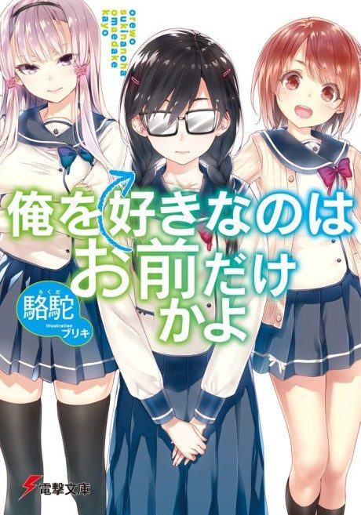
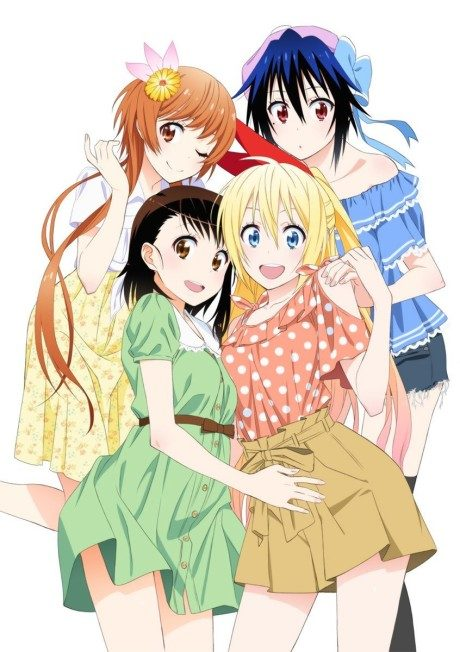
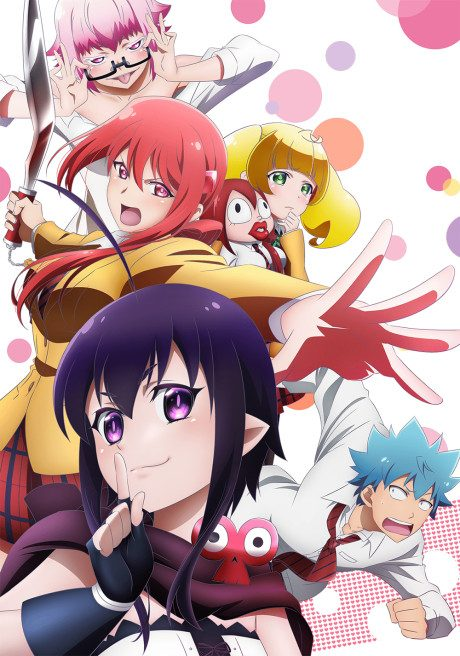
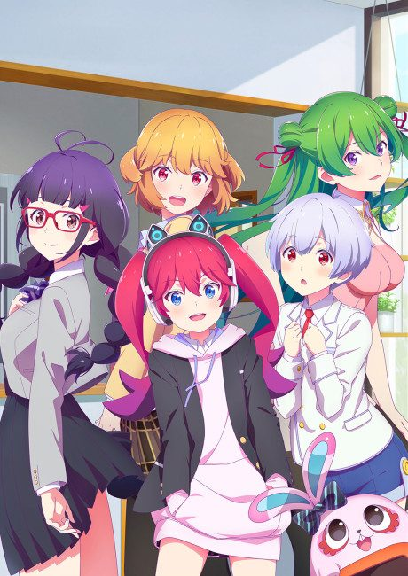

ORESUKI: Are you the only one who loves me?
俺を好きなのはお前だけかよ
Joro is asked out by two girls, but they only want his help getting close to his best friend.
We haven't found where the anime ends in the light novel yet.
7.1AniList score
—Animeter, no votes yet
12episodes
Rate it or report where you stopped
Anime finished. Where does the story go next?
StatusNo source yet
We looked for where the anime ends in the light novel but found no source we trust yet. The light novel is 17 volumes, finished.
More like ORESUKI: Are you the only one who loves me?
 Done8.5
Done8.5
 Unclear6.7
Unclear6.7
 Manga Ch. 368.0
Manga Ch. 368.0

Manga Ch. 1077.3 Done7.8
Done7.8
 Done7.7
Done7.7

Manga Ch. 346.3 Manga Vol. 46.2
Manga Vol. 46.2
 Manga Vol. 97.1
Manga Vol. 97.1
 Original7.6
Original7.6
 Manga Ch. 1837.8
Manga Ch. 1837.8

Original6.5